LIBRO DOS

De Kosaris
Diakrisis — el libro del discernimiento
Cuarenta y cuatro relatos en doce partes
CHRONESIS · PHILOTIMOS · ALETHERIS · TIMARIS
LIBRO DOS
Diakrisis — el libro del discernimiento
Cuarenta y cuatro relatos en doce partes
CHRONESIS · PHILOTIMOS · ALETHERIS · TIMARIS
Quien sostiene los cuatro pilares,
es sostenido por los cuatro pilares.
Pero el suelo sobre el que se alzan,
debe ser revisado.
Este es el segundo libro de Kosaris. El primer libro es el libro del santo Kosus y trata de cuatro cosas: el tiempo, el amor, la verdad y el respeto. Quien no haya leído ese libro puede leer este, pero le faltará aquello sobre lo que se sostiene.
El Libro Uno cuenta cómo se encontraron los cuatro pilares. Este libro trata de lo que ocurrió después.
Porque ocurrió algo que nadie había previsto. El libro fue leído. Fue leído en voz alta en mil casas, y copiado y traducido, y las frases que Demira había pronunciado junto a un mostrador mientras estaba hundida hasta los codos en la harina, se convirtieron en preceptos.
No se perdió nada. Cada palabra permaneció tal como estaba.
Solo que ya nadie comprobaba si seguía siendo cierta.
Este libro trata de la distinción entre lo que está establecido y lo que se ha dado por sentado, y de la disposición a hacer también esa distinción frente a uno mismo. En este libro eso se llama Diakrisis. No es un quinto pilar. Es lo que haces antes de empezar a cargar: miras si el suelo resiste.
Las historias no terminan con "Kosus dice". Kosus ha muerto y ya no dice nada. Terminan con una pregunta y con cuatro palabras.
Esas cuatro palabras son lo más difícil de todo este libro. No están ahí para absolver a nadie. Están ahí porque es verdad, y porque precisamente empeora el asunto.
———
Y nadie había mentido.
Parte I
En el que el libro de Kosus es leído por toda Europa, y Klytia vuelve a oír sus propias palabras como precepto.
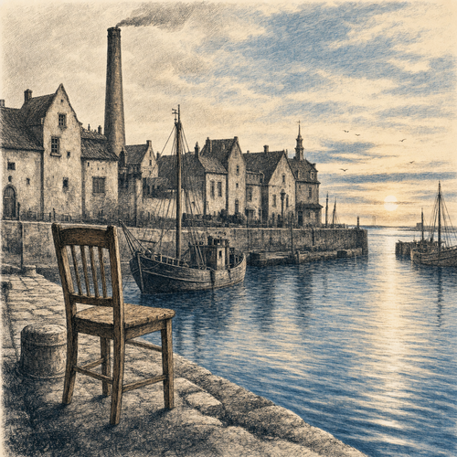
Relato 1
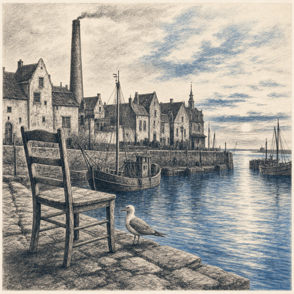
Había una silla en el muelle donde Kosus había estado sentado. Nadie había decidido que debía quedarse allí. Estaba allí, y la dejaron estar.
El capitán del puerto la limpiaba cada mañana. Al principio lo hacía porque no podía soportar ver que las aves marinas habían pasado por encima. Más tarde lo hacía porque siempre lo había hecho.
Anthea lo vio ocupado cuando tenía cuarenta años. Estaba junto a las redes y observó cómo pasaba el paño por el asiento, tres veces, siempre tres veces, y luego sacudía el paño contra el muro del muelle.
"¿Por qué hace eso?" preguntó.
Él alzó la mirada. "Porque hay que hacerlo."
"¿Por mandato de quién?"
Lo pensó. Pensó más tiempo del que merecía la pregunta, y él mismo también lo advirtió.
"No lo sé", dijo por fin. "Llevo haciéndolo once años."
Anthea asintió y siguió caminando. Aquel día no volvió a pensar en la silla. Pero siete años después, cuando algo había salido mal de un modo que nadie había podido prever, volvió a pensar en ella, y entonces supo que allí había comenzado.
No con una mentira. Con un hombre que hacía algo bueno y ya no sabía por qué.
¿Qué hace usted cada día porque hay que hacerlo?
Y nadie había mentido.
Relato 2
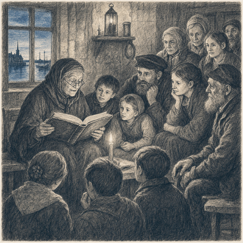
Klytia era vieja. Todavía caminaba, pero no muy lejos, y los jueves por la noche iba a la casa de la viuda, en la calle de la Sal, porque allí se leía en voz alta.
Aquella noche eran catorce. Leía un joven. Leía bien, con calma, y dejaba caer silencios en los lugares donde correspondían.
Leía el relato del saco de harina. Klytia lo conocía. Había estado allí cuando Demira se lo contó a Kosus, en el mostrador, con harina en los brazos hasta los codos.
El joven leyó: "Lo que en el papel cuadra pero no en la balanza, no cuadra."
Un murmullo de asentimiento recorrió la habitación. Alguien asintió lentamente. Una mujer dijo en voz baja: "Así es."
Y Klytia estaba allí sentada y sintió algo frío.
Porque no había sonado así. Cuando Demira lo dijo, no había sido una ley. Había sido una mujer que había perdido a tres proveedores y encontrado a cuatro nuevos, y que aquel mes había estado a punto de sucumbir. Era algo que le había sucedido, y lo había escrito para que no tuviera que sucederle a otro.
Ahora era una frase que se citaba.
Klytia no dijo nada. ¿Qué habría de decir? El joven no había hecho nada malo. Había leído palabra por palabra lo que estaba escrito.
De regreso, apoyada en su bastón, pensó: sigue escrito exactamente como estaba escrito. Y se ha convertido en otra cosa.
¿Cuándo se convierte una frase verdadera en una frase que ya nadie vuelve a examinar?
Y nadie había mentido.
Relato 3
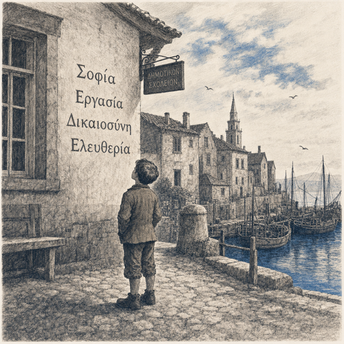
En la escuela del muelle colgaban de la pared las cuatro palabras. Chronesis. Philotimos. Aletheris. Timaris. Estaban escritas a mano en una tabla, y la tabla llevaba allí tanto tiempo que la madera se había oscurecido donde no llegaba el sol.
El maestro preguntó a la clase qué significaba Chronesis.
Se alzaron once manos. Señaló a una. La niña dijo: "El tiempo que le das a otro."
"Bien", dijo el maestro.
En el fondo de la clase había una niña de ocho años que no había levantado la mano. Sin levantarla, preguntó: "¿Cuándo fue la última vez que usted hizo eso?"
El maestro la miró.
La clase quedó en silencio. Permaneció así tanto tiempo que los niños se sintieron incómodos y comenzaron a moverse en sus asientos.
"Ayer", dijo el maestro por fin. "Creo."
"¿No lo sabe?"
"No", dijo él. "No lo sé."
Podría haber mentido. Nadie lo habría notado y la lección se habría salvado. No lo hizo, y esa es la razón por la que este relato fue escrito.
Aquella noche permaneció largo rato sentado ante su mesa. Conocía las cuatro palabras. Podía explicarlas, podía deletrearlas, podía contar de qué relato procedían.
Y no podía recordar ni una sola hora del mes anterior que hubiera dado a alguien sin recibir algo a cambio.
¿Puede explicar la palabra, o puede hacerla?
Y nadie había mentido.
Parte II
Donde se empieza a advertir que las cosas que parecen obvias alguna vez fueron decididas por alguien, y a veces por nadie.
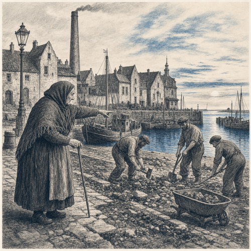
Historia 4
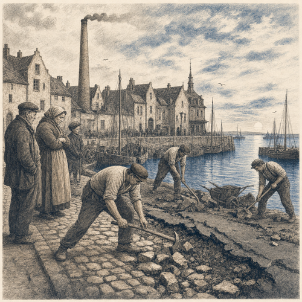
Levantaron el camino que bordeaba el puerto. Llegó una cuadrilla con máquinas, retiraron la sustancia negra y pusieron otra sustancia negra en su lugar.
Un niño de cinco años observaba. Observó toda una tarde.
Por la noche preguntó a su padre por qué un camino es negro.
—Porque los caminos son negros —dijo su padre.
—Sí —dijo el niño—. Pero ¿por qué?
Su padre dejó el periódico. No era un hombre tonto ni impaciente, y advirtió que no lo sabía.
Se lo preguntaron al capataz. El capataz dijo que se llamaba betún y que procedía del petróleo.
—¿Y por qué se hacen caminos con él?
—Porque pega.
—Sí —dijo el niño—. Pero ¿por qué?
El capataz se rio y dijo que debía preguntárselo a alguien que hubiera estudiado. Así que se lo preguntaron al ingeniero, y el ingeniero dijo que el betún es lo que queda cuando se extraen del petróleo la gasolina, el queroseno y el diésel. Lo que queda en el fondo de la caldera es betún.
—Entonces es lo que sobra —dijo el padre.
—Sí.
—¿Y quién decidió que los caminos se hicieran con eso?
El ingeniero reflexionó. —Nadie —dijo al fin—. Estaba ahí, y pegaba.
El padre volvió a casa con su hijo de la mano y no dijo nada en todo el camino.
Había caminado por aquel camino durante cuarenta y seis años.
¿Cuánto de lo que usted considera obvio nunca fue decidido por nadie?
Y nadie había mentido.
Historia 5
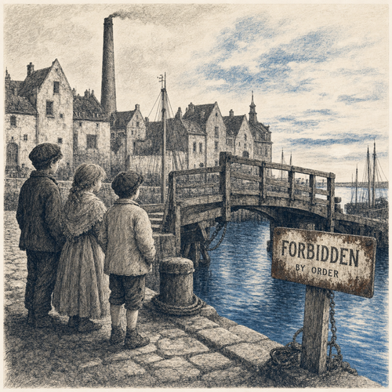
Detrás del puerto había un puente de madera sobre el canal. Había un poste con un cartel, y en el cartel decía que no estaba permitido cruzar el puente.
El cartel era tan viejo que las letras se habían vuelto marrones. Todo el mundo daba un rodeo. Eso costaba siete minutos.
La niña de ocho años lo cruzó un martes.
No lo hizo por insolencia. Lo hizo porque tenía prisa y porque olvidó que estaba prohibido.
No ocurrió nada. El puente ni siquiera crujió.
En la otra orilla había un anciano pescando que la había visto pasar. No dijo nada, pero la siguió con la mirada hasta que desapareció de su vista.
Al día siguiente le preguntó al encargado del puerto por qué no se podía cruzar el puente.
El encargado lo investigó. Tardó tres días. En un armario del desván del ayuntamiento encontró una resolución de un año que ya nadie menciona. Decía que el puente había sido clausurado porque la tercera y la cuarta viga estaban dañadas.
Junto a la resolución había una factura. Las vigas habían sido sustituidas. Once meses después.
El cartel se había quedado allí.
—Treinta y seis años —dijo el encargado del puerto. Lo dijo dos veces, como si la segunda vez fueran a ser menos.
Lo calculó en el reverso de la resolución: si cada día cuarenta personas daban el rodeo, siete minutos de ida y siete de vuelta, aquel cartel había costado en treinta y seis años casi treinta años de caminar.
Y no había nada malo en el puente.
¿Qué cartel de su vida sigue ahí aunque las vigas ya hayan sido sustituidas?
Y nadie había mentido.
Historia 6
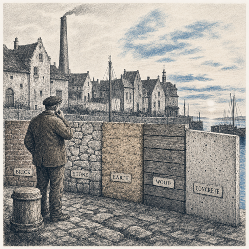
Había que perforar un pozo en el lado del campo del pueblo, y no lo conseguían.
En la reunión enumeraron lo que se interponía. Había cinco cosas.
Una anciana que había aprendido a calcular con el abuelo de Klytia se sentó al fondo y escuchó. Cuando todos hubieron hablado, se levantó y dijo que no había cinco cosas en el camino, sino cinco clases de cosas, y que no debían confundirse.
—La primera es piedra —dijo—. Bajo ese campo hay roca. Con eso no se puede hablar. Eso se acepta.
—La segunda es papel. Hace falta un permiso. No es difícil, es lento. Alguien tiene que sentarse y solicitarlo.
—La tercera es costumbre. Se dice que nunca se ha perforado en esa tierra. Es verdad. No es una razón.
—La cuarta no la sabemos. Nadie sabe a qué profundidad está el agua. Eso no es un muro, es un agujero. Ahí hace falta una medición.
—Y la quinta —dijo— es que el dueño de la tierra y el herrero llevan once años sin hablarse. Esa es la única que nadie ha mencionado esta noche, y es la única que detiene el pozo.
Guardaron silencio.
El permiso llegó en seis semanas. La medición llegó en dos días. La roca estaba allí, y cavaron a su lado.
El dueño y el herrero se estrecharon la mano en el tercer año, en un entierro.
El pozo llegó en el cuarto año.
¿De qué clase es el muro contra el que usted tropieza?
Y nadie había mentido.
Historia 7
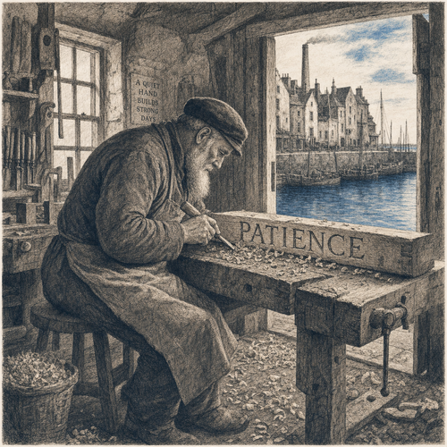
Al otro lado de la bahía había un pueblo donde prensaban. Prensaban aceite de semillas, y a lo que quedaba lo llamaban torta de prensado.
En el pueblo de este lado llamaban residuos a la misma sustancia.
Era la misma materia. Salía de la misma prensa, de la misma semilla, en el mismo año.
Al otro lado se la daban a las cabras y las cabras daban leche. Aquí la llevaban al vertedero y pagaban por carga para deshacerse de ella.
Anthea lo descubrió por una factura. Estaba en la clínica cuando entró un campesino con la mano desgarrada, y mientras ella se la vendaba él se quejó de lo que pagaba cada año para que se llevaran sus residuos.
—¿Qué es? —preguntó Anthea.
—Basura —dijo el campesino—. Lo que queda.
—¿De qué está hecho?
No lo sabía.
Empezaron a pesarlo, lo analizaron y resultó estar compuesto casi en una tercera parte de proteínas.
Entonces empezó la parte difícil. Porque para poder dárselo de comer a las cabras, ya no podía llamarse residuo, y para dejar de llamarlo residuo hacía falta un documento, y para obtener ese documento alguien debía demostrar que no era un residuo.
Eso duró dos años.
La sustancia no cambió ni un ápice durante esos dos años.
Solo cambió la palabra, y cuando cambió la palabra, cambió todo.
¿Cuánto de lo que usted tira solo tiene el nombre equivocado?
Y nadie había mentido.
Historia 8
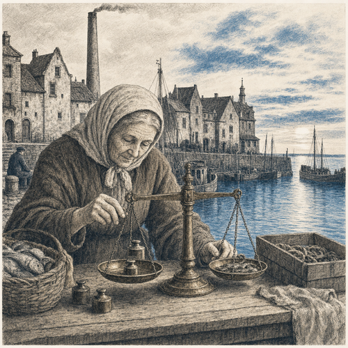
En la panadería del puerto todavía estaba la balanza de Demira. Estaba en el estante, a la derecha del horno, y estaba limpia.
Ya no se usaba.
No era por descuido. El sobrino que se había hecho cargo de la panadería era un hombre meticuloso. Durante los primeros cuatro años había pesado los sacos, cada saco, como correspondía.
Entonces murió el proveedor y su hija se hizo cargo, y ella era una mujer que tenía sus asuntos en orden, y durante nueve años no hubo un solo saco que no cuadrara.
Así que dejó de pesar.
Tenía una buena razón, y la razón era cierta.
Lo que no sabía, y no podía haber sabido porque no lo había preguntado, era que desde hacía dos años la hija ya no compraba su harina al mismo molino.
No salió nada mal. Eso es lo inquietante de esta historia.
La harina era buena, el pan era bueno, y nunca se perjudicó a nadie.
Pero cuando Anthea le preguntó por qué ya no pesaba, él dijo: —Porque no hace falta.
Y cuando ella le preguntó cómo lo sabía, su respuesta tenía nueve años.
¿En qué se apoya la confianza que ya no comprueba?
Y nadie había mentido.
Parte III
En el que se realiza un buen trabajo sobre un encargo que estaba mal planteado, y se aprende que el error rara vez reside en el trabajo.
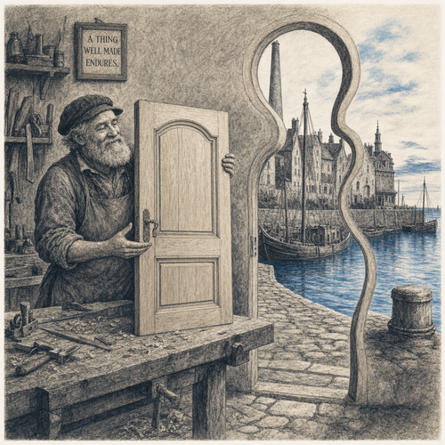
Relato 9
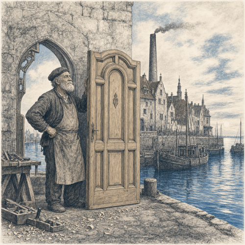
Alkion tenía ochenta y dos años y sus manos aún eran firmes.
Le pidieron que hiciera una puerta para el nuevo edificio del muelle donde se guardarían las redes. Pidió las medidas. Le dieron las medidas en una nota.
Trabajó en ella durante once semanas.
Era la puerta más hermosa que había hecho jamás, y lo sabía. La madera procedía de un solo tronco. Las uniones eran tan ajustadas que no cabía un cuchillo entre ellas. Había rematado en ángulo el umbral inferior para que el agua de lluvia escurriera sin penetrar en la junta, y eso no se lo había enseñado nadie.
El día que fue a colgarla, no encajó.
Había una diferencia de once centímetros en la altura. La puerta se había hecho conforme a la nota, la nota conforme al dibujo y el dibujo era más antiguo que los cimientos, porque durante la construcción habían hecho el edificio más profundo debido al agua.
Todos habían hecho bien su trabajo. El albañil había tenido razón al profundizar. El hombre del dibujo no había tenido que modificarlo, porque nadie le había dicho nada al respecto. Alkion había hecho lo que estaba escrito.
No había nada malo en la puerta.
No quiso adaptarla. Le ofrecieron serrar la parte superior y dijo que no. Se la llevó a su casa y la apoyó contra la pared de su cobertizo, y allí permaneció hasta que murió.
Cuando, tres semanas antes de su muerte, estaba sentado al sol con Anthea, dijo: "Trabajé once semanas en la respuesta. No dediqué media hora a la pregunta."
¿Cuánto tiempo trabaja en la respuesta antes de volver a leer la pregunta?
Y nadie había mentido.
Relato 10
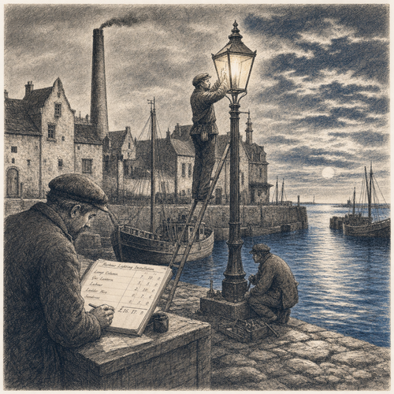
La tesorería del puerto quería iluminar mejor el muelle, porque por la noche alguien había caído al agua.
La primera lámpara costó poco y la situación mejoró de inmediato. Se veía por dónde se caminaba.
Pero quedaba un rincón oscuro junto al embarcadero del norte, y por eso llegó una segunda lámpara. Costó algo más, porque había que tender un cable.
Quedaba una sombra detrás del almacén. Tercera lámpara. Ahora había que excavar.
Y después de la tercera lámpara aún quedaba un lugar donde no se veía nada, y la cuarta lámpara costaría más que las tres primeras juntas, porque allí no pasaba la conducción y había roca.
El tesorero era un hombre callado. Puso las cuatro cantidades una debajo de otra y las contempló.
"Esto no está bien", dijo.
"Sí está bien", dijo el contratista. "Lo he recalculado tres veces."
"No me refiero a su cuenta. Me refiero a que, si un paso cuesta el doble que el anterior y el siguiente vuelve a costar el doble, entonces estamos haciendo lo equivocado."
Lo miraron.
"Estamos iluminando el muelle", dijo. "¿Por qué?"
"Porque alguien cayó al agua."
"¿Dónde cayó?"
Nadie lo sabía. Lo investigaron. Había caído junto al tercer noray del lado sur, y allí había luz. Había caído porque el noray estaba flojo.
El noray quedó fijado por casi nada.
La cuarta lámpara nunca llegó.
¿Qué le dicen sus costes crecientes acerca de su pregunta?
Y nadie había mentido.
Relato 11
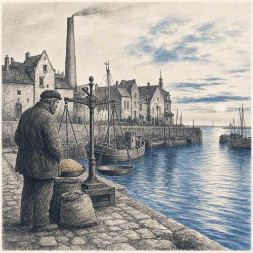
En el mercado había un pesador con una balanza, y era honrado. Todos sabían que era honrado. Siempre dejaba que el cliente mirara la aguja.
Y, sin embargo, algo no cuadraba, porque los pescadores salían peor parados que los campesinos, año tras año.
Nikos, que era joven y acababa de tener una barca, se quedó allí observando. Permaneció allí durante tres mañanas de mercado.
En la tercera lo vio.
El pesador ponía el pescado en el platillo izquierdo y las pesas en el derecho. Con los campesinos ponía las verduras en el platillo derecho y las pesas en el izquierdo. Lo hacía porque estaba a la derecha y así trabajaba más fácilmente.
La balanza no era exacta. Pesaba media onza de menos, desde hacía años, desde que se había caído.
Con los campesinos eso jugaba a su favor. Con los pescadores, en su contra.
El pesador no lo sabía. Cuando se lo mostraron, palideció y se sentó.
Había mirado miles de veces la aguja, y la aguja había dicho miles de veces la verdad sobre lo que había en los platillos.
Nunca había mirado cuál era cuál.
¿Mira la aguja o mira qué hay en cada platillo?
Y nadie había mentido.
Relato 12
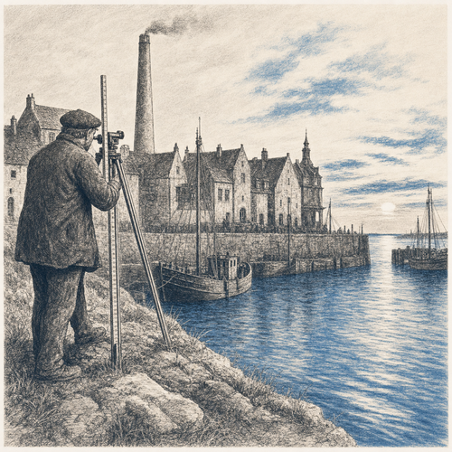
Vino un agrimensor para el campo detrás de la iglesia, porque querían construir algo allí.
Tenía buenas herramientas y se tomó su tiempo. Midió el campo hasta la pulgada. Lo dibujó en un papel grande, con los ángulos en grados y minutos, y se veía que conocía su oficio.
Estuvo ocupado con ello durante dos días.
Cuando terminó, la niña de ocho años cruzó el campo hacia él, en línea recta, como caminan los niños. Se detuvo junto a su mesa y miró el dibujo.
"¿Dónde está la pendiente?", preguntó.
El agrimensor levantó la vista.
"No hay ninguna pendiente."
"Si camino desde allí hasta aquí", dijo ella, señalando, "voy cuesta abajo. Cuando regreso tengo que empujar con las piernas."
Él no había caminado por el terreno. Había permanecido donde estaba su trípode y había mirado a través de su visor, y el visor le había contado todo lo que había preguntado.
El campo descendía. No mucho. Lo suficiente para retener el agua después de la lluvia.
No construyeron allí.
¿Ha caminado usted mismo por el terreno?
Y nadie había mentido.
Relato 13
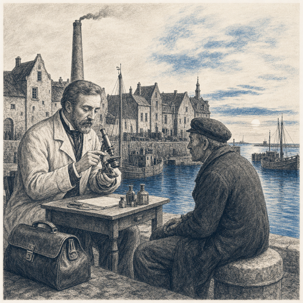
La alcaldesa que sucedió a Sofia era una buena alcaldesa. Mantenía el panel de control como correspondía y alcanzaba sus objetivos.
Las diez cifras estaban aquel año todas por encima de la norma. Era el mejor año desde que se llevaban las cifras.
Y ese mismo año diecinueve jóvenes abandonaron el pueblo.
Lo comprobó. El año anterior habían sido diecisiete y el año anterior a ese, veinte. Nada había cambiado.
Repasó los diez objetivos y miró si había alguno que debiera compensarlo.
Empleo: había trabajo. Vivienda: había casas. Educación: buena. Atención: buena. Seguridad, cultura, cohesión: todo en verde.
En la reunión dijo: "He alcanzado todo lo que acordamos alcanzar. Y el pueblo se queda vacío."
Alguien dijo que quizá las cifras no eran correctas.
"Las cifras son correctas", dijo ella. "He hecho que las recalculen tres veces. Ese es precisamente el problema."
Siguió pensándolo durante dos años. Al final escribió una sola frase sobre ello en el informe, y esa frase tuvo más efecto que todas sus cifras:
Si todo lo que medimos está bien y las cosas van mal, entonces medimos lo equivocado.
¿Qué podría estar saliendo mal mientras todas sus cifras están bien?
Y nadie había mentido.
Parte IV
Donde se descubre que la pequeña intervención llega más lejos que la grande, y que el orden importa más que la fuerza.
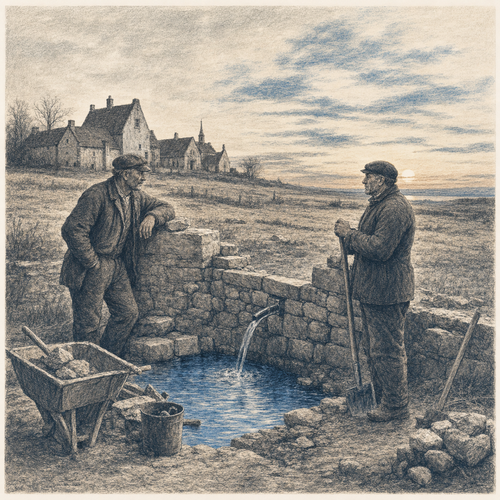
Relato 14
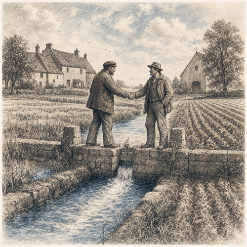
Había un manantial y había dos campos, y los dos campesinos que los cultivaban eran hermanos.
Un año sí y otro no, uno recibía el agua y el otro no. En los años en que uno de ellos no recibía el agua, cosechaba menos de la mitad. Llevaban diecisiete años disputando por ello y ambos se habían empobrecido.
Habían intentado hacer más profundo el manantial. Eso no dio más agua. Habían intentado abrir un segundo manantial. No había un segundo manantial. Habían intentado repartir el agua a partes iguales, y entonces ambos cosecharon demasiado poco.
Theia tenía once años. Aquel verano estaba con su tío en el campo y vio que el agua se daba por la tarde, cuando parecía hacer más falta.
Preguntó por qué.
"Porque entonces la tierra está seca."
"Pero también es cuando hace más calor", dijo ella.
Comenzaron a darla por la noche.
Ya casi nada se perdía en el aire. Quedaba suficiente para ambos campos.
No había costado nada. Había tardado diecisiete años.
El hermano mayor dijo después que durante diecisiete años había mirado el manantial. Ni una sola vez había mirado el cielo.
¿Busca usted más agua, o menos evaporación?
Y nadie había mentido.
Relato 15
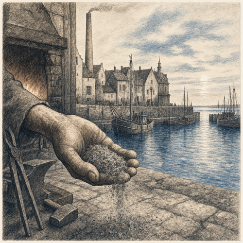
El herrero necesitaba una mezcla capaz de soportar el suelo de la herrería y que no se resquebrajara con el calor. Todo lo que probaba se agrietaba.
Hizo la mezcla más húmeda. Se agrietó. La hizo más seca. Se agrietó de otra manera. Trajo arena distinta de otra cantera y pagó el doble por ella. Se agrietó.
Llevaba cuatro meses con aquello y en esos cuatro meses había vuelto a verter tres veces todo el suelo.
Una anciana del pueblo, que no sabía nada de suelos pero sabía mucho de hornos, fue a mirar. Se sentó en un taburete junto a la puerta y permaneció largo rato en silencio.
Entonces dijo: "Añade ceniza."
"¿Ceniza?"
"Un puñado por cubo. No más."
Le pareció absurdo, pero lo hizo de todos modos, porque estaba cansado.
No se agrietó.
Ella no podía explicarle por qué. Solo dijo que su madre siempre lo hacía con el lecho del horno, y que un horno también se calentaba.
Más tarde alguien lo investigó y resultó que había una razón, y aquella razón llenaba tres páginas.
El herrero había intentado durante cuatro meses cambiar toda la masa.
Lo que ayudó fue otra cosa, en pequeña cantidad, bien repartida.
¿Cambia usted el conjunto, o aquello escaso que determina el conjunto?
Y nadie había mentido.
Relato 16
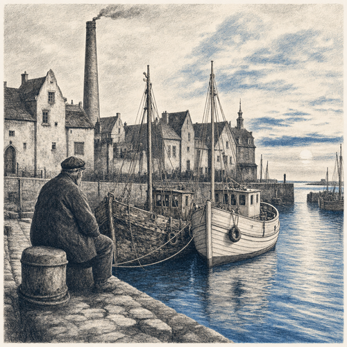
En el puerto había dos barcos construidos el mismo año.
Uno era rápido. Se elevaba mucho sobre el agua, ofrecía poca resistencia y, con buen viento, llegaba a los bancos antes de que el otro hubiera salido de los muelles.
El otro era lento. Se hundía bajo y pesado, y estaba construido con una proa cerrada que dejaba que el mar pasara por encima en lugar de enfrentarlo.
Durante once años ganó el rápido. Durante once años ganó más, y el dueño del lento tuvo que escucharlo.
En el duodécimo año, en octubre, llegó una tormenta que nadie había esperado, tampoco Alkion, y duró diecinueve horas.
El barco rápido no regresó. La tripulación sí; la recogieron.
El lento estaba a la mañana siguiente en el muelle, con una vela rasgada y nada más.
Entonces nadie extrajo una lección ni hubo quien dijera que podían haberlo sabido. Durante once años había sido sensato construir el rápido.
Pero cuando Nikos mandó construir su primer barco, no partió de un día bueno.
Le preguntaron por qué construía tan pesado.
Dijo: "Construyo para las diecinueve horas."
¿Diseña usted para el día bueno o para el peor?
Y nadie había mentido.
Relato 17
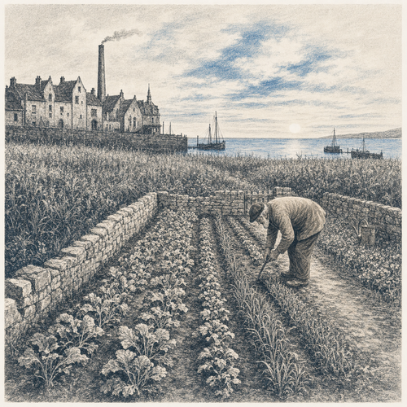
Al pueblo llegó una semilla nueva. Prometía mucho: mayor rendimiento, menos agua, y conservaría la tierra.
Los campesinos la querían de inmediato. Habían dejado atrás un año malo y aquello era algo a lo que aferrarse.
Uno de ellos, el mayor, sembró una esquina. Media fanega de tierra, detrás de la zanja, donde el suelo de todos modos no daba mucho.
Se burlaron de él. Dijeron que tenía miedo.
La semilla prosperó. Brotó, creció alta, retuvo la tierra como se había prometido.
Y al tercer año apareció un hongo que aquí no conocían, que penetró en aquel cultivo y ya no salió de él.
El campesino mayor perdió media fanega de tierra.
Los demás perdieron sus cosechas y tuvieron que esperar dos años antes de que la tierra volviera a estar limpia.
Cuando más tarde le preguntaron cómo lo había sabido, dijo que no lo había sabido.
"No sabía nada", dijo. "Solo sabía cuánto podía costarme si me equivocaba."
¿Cuánto cuesta si se equivoca, y puede pagarlo?
Y nadie había mentido.
Relato 18
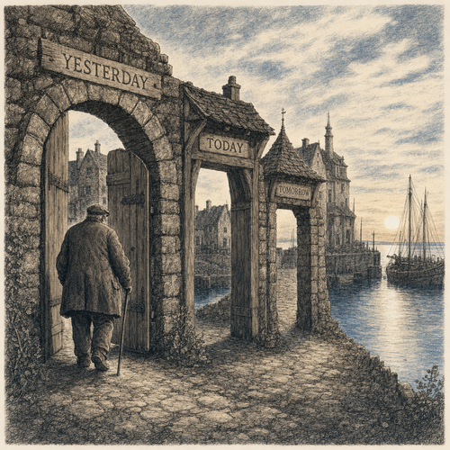
Había que construir un nuevo embarcadero en el lado sur. Hacían falta cinco cosas antes de que un solo poste pudiera entrar en la tierra.
Comenzaron por la primera, porque parecía lógico: primero la tierra, luego la madera, después el permiso, luego el dinero y por último los hombres.
Con la tierra quedaron atascados, porque el propietario había muerto y la herencia estaba en manos de un notario de la capital.
Esperaron siete meses.
En esos siete meses no ocurrió nada, porque todo lo que había que hacer aparecía en la lista después.
Theia tenía entonces trece años y estaba allí porque su padre formaba parte de la comisión. Había visto la lista y no entendía por qué trabajaban en ese orden.
"¿Para cuál de las cinco necesitan a otra persona?", preguntó.
Lo calcularon. Para la tierra y para el permiso necesitaban a otro. Para la madera, el dinero y los hombres, no.
Compraron la madera, reunieron el dinero y organizaron a los hombres, mientras el notario hacía lo que hacen los notarios.
Cuando por fin llegó el documento, la madera ya estaba seca bajo una lona.
Desde entonces, en aquel pueblo hacen dos listas. En una está lo que pueden hacer por sí mismos. En la otra, aquello por lo que deben esperar.
Siempre comienzan por la primera lista.
¿Qué puede hacer hoy de su lista sin el permiso de nadie?
Y nadie había mentido.
Parte V
Donde se aprende a escribir lo que no se sabe, y donde queda demostrado que admitirlo es más rápido que empeñarse en tener razón.
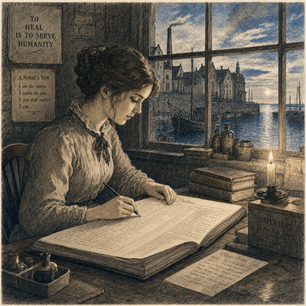
Relato 19
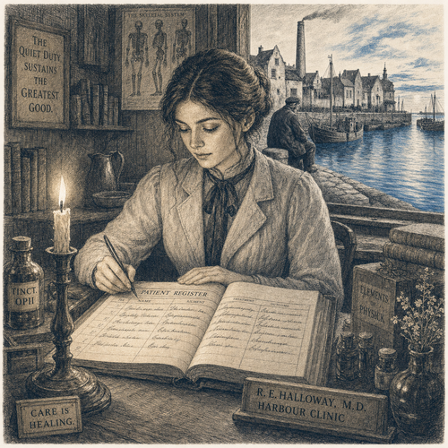
Anthea llevaba un libro en la clínica. Anotaba, por cada paciente, qué se había hecho y qué se había visto.
A un viejo pescador con dificultad para respirar le escribió lo que había medido, y después dejó una línea en blanco.
El médico lo vio y preguntó qué significaba aquella línea vacía.
"Hay algo", dijo Anthea. "No sé qué. Respira de otra manera que los demás con lo mismo. No puedo nombrarlo, así que no lo escribo."
"Entonces escriba lo que piensa."
"No", dijo ella. "Si escribo lo que pienso, dentro de diez años figurará como algo establecido."
Al médico le pareció descuidado y lo dejó así.
Once años después llegó una joven médica que revisó los libros antiguos porque en el pueblo ocurría algo con los pulmones de los pescadores, y buscaba un patrón.
Lo que encontró fueron siete líneas vacías. Siete veces, en siete personas distintas, a lo largo de catorce años, Anthea había dejado una línea en blanco.
Los siete habían sido pescadores. Los siete habían trabajado en el mismo astillero.
Si Anthea hubiera escrito lo que pensaba, habría aparecido algo distinto siete veces, y nadie habría visto nada en ello.
Lo que se encuentra no siempre es lo que está escrito. A veces es lo que se ha dejado abierto.
¿Qué es lo que no sabe, y se atreve a escribirlo así?
Y nadie había mentido.
Relato 20
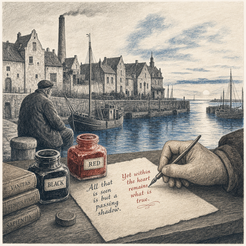
El primo de Demira, que regentaba la panadería, amaba el orden. Tenía un libro en el que llevaba la cuenta de todo lo relacionado con la harina: cuánto pesaba, cuánto costaba, de dónde procedía.
Anthea vio que tenía dos tinteros.
"¿Por qué dos?"
"La negra es lo que he pesado", dijo él. "La marrón es lo que he sumado o deducido."
A ella le pareció exagerado y así se lo dijo.
Él se encogió de hombros. Se lo había enseñado su tía y nunca había pensado en ello.
Cuatro años después hubo una disputa con un proveedor por una entrega de tres años atrás. Sobre la mesa había dos libros: el del proveedor y el del panadero.
Ambos libros cuadraban. Ambos libros daban una cifra diferente.
Lo revisaron. En el libro del proveedor todas las cifras estaban escritas con la misma tinta y ya nadie podía decir cuáles se habían pesado y cuáles se habían calculado.
En el libro del panadero la diferencia se veía en una sola página.
Lo ocurrido quedó claro en dos minutos: una vez había usado un promedio en lugar de una pesada, y eso estaba en marrón.
No se reprendió a nadie. Se repartió la diferencia y se siguió adelante.
Pero desde entonces el proveedor también empezó a trabajar con dos tinteros.
¿Puede ver en sus propias notas qué se ha medido y qué se ha deducido?
Y nadie había mentido.
Relato 21
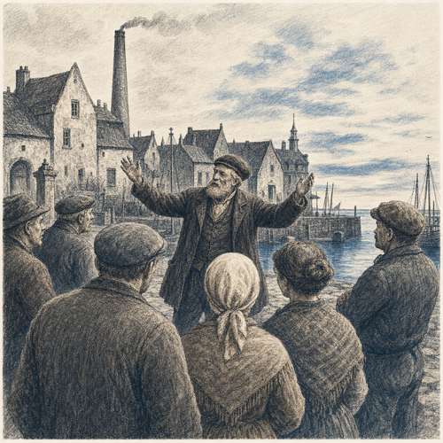
Había un hombre en el pueblo que lo sabía todo. Es decirlo con demasiada fuerza, pero así se hablaba de él.
Cuando le preguntaban algo, respondía de inmediato y su respuesta era clara.
En una reunión sobre el hundimiento del muelle sur dijo que se debía al peso del almacén.
Alguien lo contradijo. El almacén llevaba allí apenas dos años y el muelle se hundía desde hacía más tiempo.
Pensó un instante y entonces dijo que se debía a la corriente, que arrastraba la arena bajo la tablestaca.
Sonaba bien. Incluso mejor que lo primero. Todos asintieron.
Anthea estaba allí y no dijo nada, pero se fue a casa con una sensación incómoda que solo pudo nombrar a la mañana siguiente.
No había dicho en qué había estado equivocado su primera respuesta.
Había pasado de una respuesta a la otra sin tocar el espacio intermedio, y en ese espacio estaba lo único que se podría haber aprendido.
Ella fue a preguntárselo. Se acercó a él y no le preguntó si tenía razón, sino dónde había fallado su primera respuesta.
Él no lo sabía.
Más tarde resultó que había sido el agua que venía del lado de tierra, algo que nadie había mencionado porque todos habían mirado hacia el mar.
Dos respuestas hermosas habían señalado ambas en la dirección equivocada.
Cuando lo contradicen, ¿da una respuesta nueva o busca el error?
Y nadie había mentido.
Relato 22
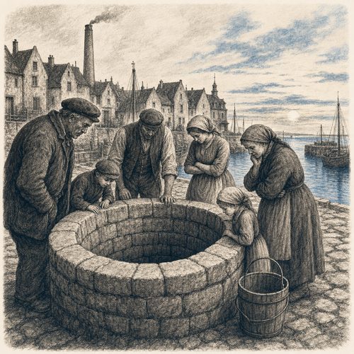
El pozo detrás de la escuela ya no daba agua. Siempre la había dado.
Se reunieron. La primera noche hablaron de la sequía, porque había llovido poco, y estuvieron de acuerdo.
La segunda noche se reunieron porque habían caído en la cuenta de que los otros pozos sí funcionaban. Hablaron del suelo, de un desplazamiento, de una tubería vieja. No estuvieron de acuerdo y se fueron a casa.
La tercera noche volvieron a reunirse y dijeron más o menos lo mismo que la segunda, con otras palabras.
Theia estuvo allí la tercera noche. Tenía entonces catorce años y le permitieron acompañar a su madre porque esta intervenía en la discusión.
Al final de aquella noche dijo: "Esto también lo dijimos ayer."
La miraron.
"Sí", dijo alguien. "Pero todavía no hemos llegado a una conclusión."
"No", dijo ella. "Pero desde ayer no se ha añadido nada."
A la mañana siguiente fue allí sola con una cuerda y una piedra. Dejó caer la piedra y contó.
Había agua. De sobra.
La cadena del cubo se había roto a cinco metros y el extremo colgaba recto y pulcro hacia abajo, de modo que desde arriba no se veía nada.
Tres noches.
¿Cuántas veces ha vuelto ya a la misma respuesta?
Y nadie había mentido.
Relato 23
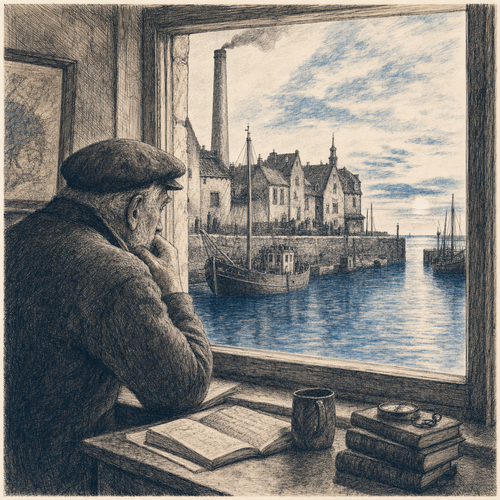
Theia tenía dieciséis años y se había vuelto insoportable.
Eso pensaban en el pueblo, y no era del todo falso. A todo le hacía la misma pregunta, y la pregunta era: ¿cómo notaría que no es así?
Cuando alguien decía que la pesca empeoraba porque había demasiadas barcas, ella lo preguntaba. Cuando el maestro decía que los niños de hoy sabían calcular menos, ella lo preguntaba.
Por lo general no había respuesta.
Eso era lo desagradable. No que ella tuviera razón, sino que tan a menudo no hubiera nada.
Al maestro le enfurecía, y decía que no todo se puede demostrar y que algunas cosas simplemente son así.
"Puede ser", dijo Theia. "Pero entonces no es una afirmación, sino un sentimiento. Y debe llamarlo así."
En una cosa sí hubo respuesta.
El nieto de Alkion dijo que los motores de etanol requerían menos mantenimiento que los antiguos, y cuando ella se lo preguntó, dijo: "Si no es así, las barcas pasan más tiempo amarradas al muelle que antes. Eso consta en el libro del capitán del puerto."
Lo comprobaron. Era cierto.
Fue la única afirmación que se mantuvo en pie aquel invierno, y la única que había dicho de antemano cómo podía caer.
¿Qué tendría que ver para saber que se equivoca?
Y nadie había mentido.
Parte VI
Donde lo bueno que se construyó sigue funcionando mientras nadie recuerda ya por qué se dispuso así.
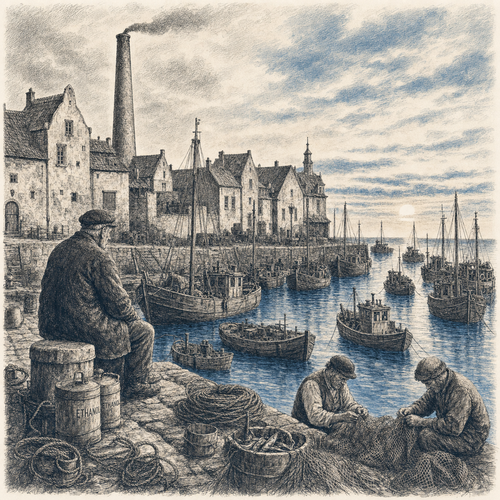
Relato 24
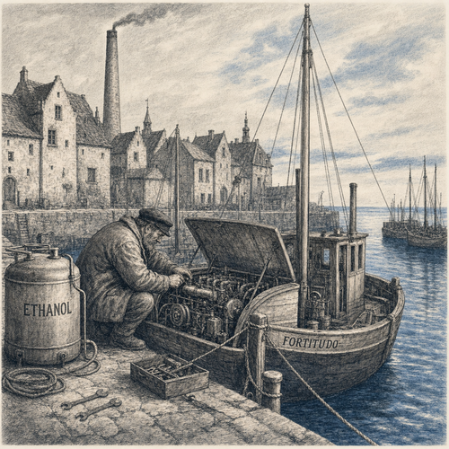
Las catorce embarcaciones funcionaban con etanol. Así era desde los tiempos de Ruud, que venía de Rotterdam y había instalado el primer motor junto a Alkion.
Nikos tenía veintitrés años y su primera embarcación propia. Preguntó al capitán del puerto por qué allí se navegaba con etanol y no con lo que usaba el resto de la costa.
El capitán del puerto no lo sabía con exactitud. Dijo que era más limpio.
Nikos se lo preguntó al mecánico. Este dijo que era más silencioso.
Se lo preguntó a un viejo pescador. Este dijo que era más barato.
Las tres respuestas eran verdaderas y ninguna de las tres era la respuesta.
La respuesta verdadera estaba en un libro que reposaba en el armario de la caja del puerto: se habían pasado a ese combustible porque venía del sur, de una región que quince años antes había sido un desierto, y porque el puerto y aquella región se mantenían unidos por ello.
No había sido una elección técnica. Era una alianza.
Ya nadie en el puerto lo sabía.
Y como nadie lo sabía, tampoco hubo nadie que lo advirtiera cuando dos años después se ofreció un combustible más barato y procedente de un lugar completamente distinto.
Lo aceptaron. ¿Por qué no? Era la misma sustancia.
¿Recuerda aún por qué hace lo que hace, o solamente que lo hace?
Y nadie había mentido.
Relato 25
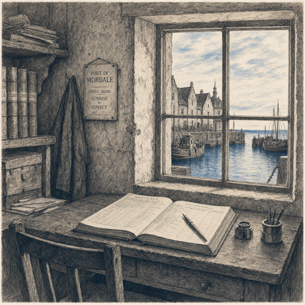
La caja del puerto existía desde hacía treinta y seis años. Había vuelto a comprar tres embarcaciones y las alquilaba a jóvenes pescadores que no tenían dinero.
Funcionaba. Nunca había habido una disputa al respecto.
Las reglas estaban escritas en cuatro páginas por personas que entretanto habían muerto todas.
En la página tres decía que, después de diez años de alquiler, una embarcación pasaba a ser propiedad del arrendatario, salvo que la caja decidiera otra cosa.
Siempre se había hecho así.
Lo que ya nadie sabía era por qué figuraban allí diez años. El número procedía de la época en que una embarcación se amortizaba en diez años.
Una embarcación con motor de etanol dura veinticinco años.
Así pues, se habían entregado tres embarcaciones que aún podrían haber servido durante quince años, y había habido jóvenes pescadores que no habían recibido ninguna porque la caja estaba vacía.
Cuando hicieron las cuentas, nadie se enfadó. Todos habían hecho lo que estaba escrito.
Cambiaron la cifra a dieciocho años y escribieron junto a ella de dónde procedía y cuándo debía revisarse de nuevo.
Esto último era nuevo. En las cuatro páginas antiguas no figuraba junto a ninguna regla cuándo debía revisarse de nuevo.
¿Indican sus acuerdos cuándo deben volver a revisarse?
Y nadie había mentido.
Relato 26
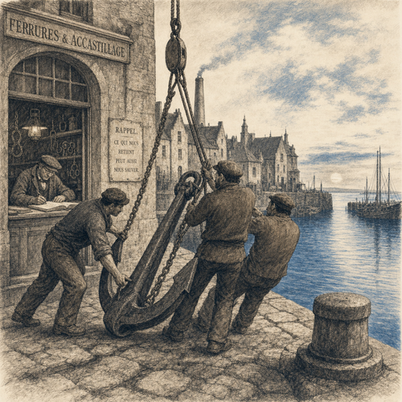
Alkion había encargado una vez un ancla al herrero en lugar de hacerla traer. Había costado tres veces más y él no había dado explicaciones por ello.
Su nieto encontró la factura cuando vació la casa.
Era calculista y volvió a hacer las cuentas, porque quería saber si su abuelo había sido un necio o no.
Sumó lo que había costado de más: la diferencia y los intereses de treinta años.
Luego sumó lo que había producido. Eso era más difícil, porque no constaba en ninguna parte.
El herrero había podido mantener a su hijo empleado aquel año. Más tarde, aquel hijo había fabricado los herrajes para los primeros motores de etanol, porque allí no había nadie más capaz de hacerlo. Sin él, los motores habrían tenido que venir de la capital, y entonces no habrían podido permitírselos.
Llegó a una cifra tan grande que volvió a hacer la cuenta tres veces.
Cuando se la enseñó a Anthea, ella dijo: "No cuentes eso como ganancia."
"¿Por qué no?"
"Porque no podías haberlo sabido de antemano. Él tampoco."
"¿Por qué lo hizo entonces?"
Anthea reflexionó.
"Porque conocía al herrero", dijo.
¿Qué paga usted tres veces, y a quién?
Y nadie había mentido.
Relato 27
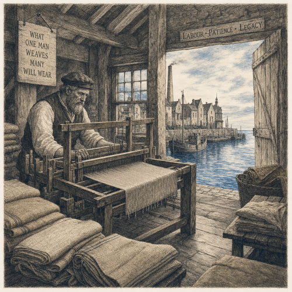
Había cuatro tejedoras en el pueblo. Suministraban al mercado y a dos tiendas de la capital.
Todos sabían que había trabajo para tres.
Nadie lo decía.
No lo decían porque habría sonado cruel y porque nadie quería decir cuál de las cuatro sobraba.
Así que se repartían el trabajo y las cuatro ganaban demasiado poco.
La más joven, la que menos tenía, resistió dos años. Luego se marchó a la capital y no regresó.
Era la mejor de las cuatro.
Las otras tres lo sabían, y es una de las pocas cosas de las que nunca se habló en aquel pueblo.
Klytia dijo algo sobre ello una sola vez, a Anthea, en el último año en que aún conservaba la lucidez.
"Teníamos tanto miedo de hacer daño a alguien", dijo, "que permitimos que se marchara la equivocada."
¿Qué verdad no pronuncia por bondad?
Y nadie había mentido.
Parte VII
Donde, en el sur, se descubre que durante medio siglo se había mirado un solo producto, mientras en el cultivo había cuatro.
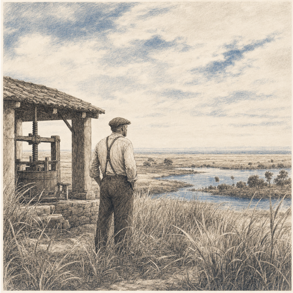
Relato 28
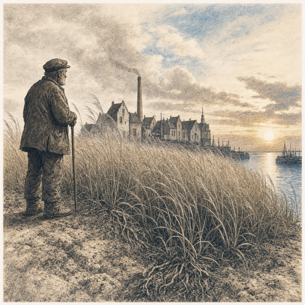
En el sur, donde cuarenta años antes había habido desierto, la hierba alta crecía ahora en diez mil lugares.
La cosechaban, la prensaban, hacían combustible con ella, y ese combustible iba hacia el norte.
Funcionaba. Habían llegado escuelas, un médico y luz a las casas.
El nieto de Mamadou tenía veintidós años y era el primero de su familia que había estudiado.
Volvió al pueblo y formuló una pregunta que nadie había formulado.
"¿Qué más hay dentro?"
Su tío no entendió la pregunta.
"Hacemos combustible", dijo. "Eso es lo que es."
"Eso es lo que hacemos con ello", dijo el muchacho. "Pregunto qué hay dentro."
Lo hicieron analizar. Tardó medio año y costó dinero que habrían preferido gastar en una bomba.
Había cuatro cosas.
Había azúcar, y de ella hacían el combustible, y eso era aproximadamente un tercio.
Había un segundo tipo de azúcar con el que no hacían nada.
Había una sustancia marrón que quemaban porque no sabían qué era.
Y había proteínas y aceite en la semilla de la planta que crecía entre ellas.
Durante cuarenta años habían utilizado una de las cuatro.
¿Qué hace usted con su materia prima, y qué contiene?
Y nadie había mentido.
Relato 29
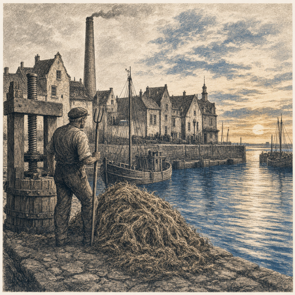
Junto a la prensa había una montaña. Aquella montaña se llamaba resto.
Se la llevaban. Costaba dinero y nunca habían pensado en ella de otro modo, porque era resto y el resto se lo llevan.
El muchacho que había estudiado hizo pesar la montaña.
Era una petición extraña. Nadie pesa el resto.
La montaña pesaba más que lo que había salido de la prensa.
Más que el producto.
Los cuatro se quedaron alrededor de ella y durante un rato no dijeron nada, porque si uno se lleva algo sesenta y seis veces al año y pesa más que lo que vende, entonces hay algo fundamentalmente distinto de lo que uno pensaba.
"No somos una fábrica de combustible", dijo finalmente el muchacho.
"¿Qué somos entonces?"
"No lo sabemos. Nunca hemos mirado."
Ese año no hicieron nada con ello. No tenían gente para hacerlo ni dinero para ello.
Pero dejaron de llamarlo resto, y eso fue lo único que hicieron aquel invierno.
Dos años después llegó alguien del norte para comprarlo.
¿Pesa más lo que tira que lo que vende?
Y nadie había mentido.
Relato 30
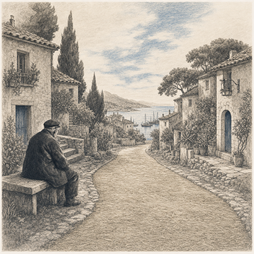
El primer camino que no era negro se extendía entre dos pueblos del sur y tenía once kilómetros de largo.
Era gris parduzco, aproximadamente del color de la arcilla mojada cuando se seca.
Estaba hecho de piedra y arena, como todos los caminos, pero lo que mantenía unida la piedra había salido del campo.
Los ancianos no confiaban en él.
Andaban sobre él y lo pisoteaban y decían que un camino debía ser negro, y que un camino que no es negro no es un camino.
Se rieron de él y no lo escucharon, porque el camino estaba allí y resistía.
A los niños no les parecía nada especial.
Eso es lo único que sucede en este relato, y basta.
Para los niños que aprendieron a montar en bicicleta en aquel camino, un camino era gris parduzco, y el negro era algo extraño de otro país.
No hay manera más poderosa de cambiar algo que esa.
Solo lleva una generación, y esa es la razón por la que casi nadie lo intenta.
¿Qué consideran normal los niños que a usted todavía le parece extraño?
Y nadie había mentido.
Parte VIII
Donde se descubre que una exigencia proviene de otro clima y que la elección más barata es la más cara.
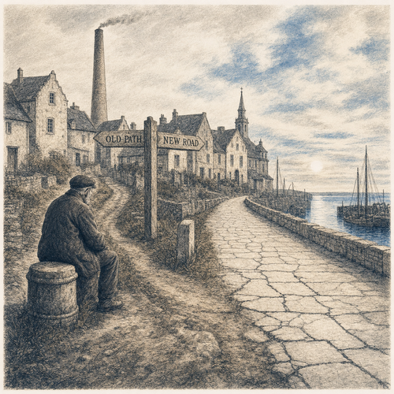
Relato 31
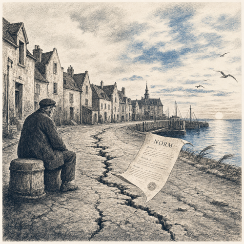
El camino del sur fue rechazado.
Llegó un inspector y llevaba consigo un libro, y en aquel libro decía que un pavimento debía superar una prueba a quince grados bajo cero.
«Aquí nunca hiela», dijo el contratista.
«Eso no dice», dijo el inspector. «Dice lo que dice.»
Tenía razón. Hacía su trabajo como correspondía y no era un hombre irracional. Él no había escrito el libro.
Se averiguó de dónde procedía el libro. Había sido redactado en un país donde hiela cuatro meses al año, y aquí se lo había adoptado porque, al redactar las normas propias, se había buscado un buen ejemplo y aquel era el mejor que había.
Eso había sucedido veintidós años atrás.
También existía otro libro, escrito para caminos de regiones cálidas con poco tráfico, y ese libro estaba en el mismo estante.
Nadie lo había abierto jamás, porque era más delgado.
Pasaron cuatro años antes de que se modificara la exigencia.
Durante esos cuatro años no se construyeron en aquella región cuarenta y ocho kilómetros de camino que podrían haber estado allí.
Nadie había mentido. Ni siquiera había nadie que estuviera en desacuerdo.
¿De qué clima procede la norma con la que se le mide?
Y nadie había mentido.
Relato 32
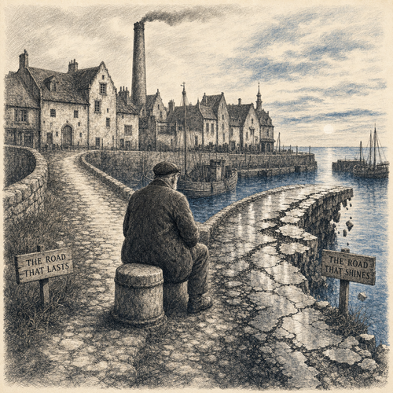
Dos pueblos construyeron el mismo año el mismo camino, igual de largo y de ancho, y a ambos les costó lo mismo.
En uno de los pueblos, el aglutinante venía de la otra orilla del mar. Se pagó y el dinero se fue.
En el otro venía del campo detrás del pueblo. Se pagó y el dinero se quedó.
En los libros del municipio figuraba en ambos casos la misma cantidad.
El contable de la provincia puso los dos expedientes uno junto al otro y dijo que los pueblos habían obtenido resultados comparables.
Eso era cierto según sus libros.
Anthea estaba en aquella reunión porque la clínica dependía del mismo presupuesto.
Ella dijo: «En el segundo pueblo trabajaron once personas aquel verano.»
«Eso no figura aquí», dijo el contable.
«No», dijo ella. «Por eso lo digo.»
No era malintencionado. Buscó en sus documentos y buscó largo rato, y entonces dijo con honestidad que en todo su modelo no había lugar donde pudiera encajar aquella diferencia.
No era un coste ni era un ingreso.
Simplemente estaba allí.
¿Qué sucede en su pueblo que no llega a figurar en ningún libro?
Y nadie había mentido.
Relato 33
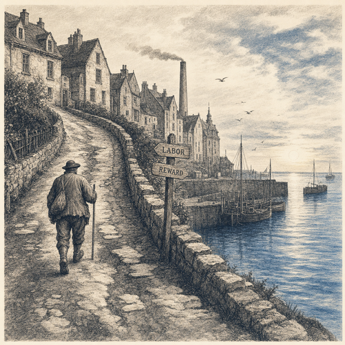
Había que abrir un camino hacia los campos de las tierras altas.
Había dos posibilidades. Una costaba menos al construirla y debía repararse cada tres años. La otra costaba la mitad más al construirla y duraba quince años.
Calculada a quince años, la segunda era más barata. No por poco.
Todos lo sabían. Lo sabía el supervisor, lo sabía el concejal y lo sabía mejor que nadie el contratista, porque había construido ambas.
Eligieron la primera.
No por necedad. El presupuesto de construcción y el presupuesto de mantenimiento eran dos bolsas, y tenían dos administradores distintos, y el hombre que decidió solo pagaba de la primera bolsa.
La bolsa de mantenimiento era problema de otro, dentro de tres años.
Cuando Theia oyó aquello, tenía diecisiete años, y se enfadó más de lo que acostumbraba.
Quería saber quién era culpable.
Anthea le dijo que no había ningún culpable, y que eso era lo peor.
«¿Entonces no se puede hacer nada?»
«Sí se puede», dijo Anthea. «Pero no con un camino mejor. Con otra bolsa.»
¿Está determinada su elección por lo que es bueno o por la bolsa de la que procede?
Y nadie había mentido.
Parte IX
Donde el gobierno bien ordenado no ve precisamente aquello que no mide.
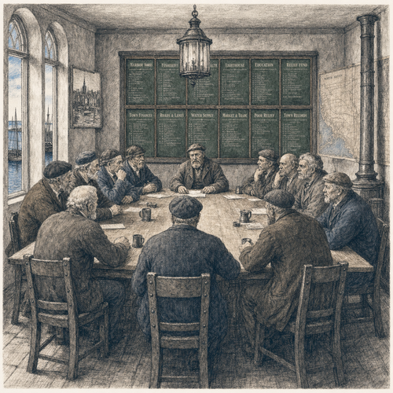
Relato 34
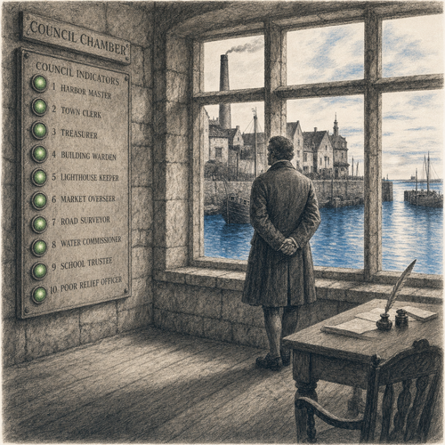
El pueblo tenía diez objetivos y un tablero para cada trimestre, y así había funcionado durante casi cuarenta años.
El año en que Theia cumplió diecinueve, los diez objetivos aparecían en verde.
Se marchó.
Se fue a la capital, como otros diecinueve aquel año, y no regresó hasta cumplir veintiocho.
Cuando volvió, fue a ver al alcalde y preguntó por qué no había un undécimo objetivo.
"¿Para qué?"
"Para quienes se marchan."
El alcalde dijo que eso no se podía medir, porque la gente podía ir adonde quisiera y no correspondía al municipio contabilizarlo.
"Usted cuenta a quienes llegan", dijo Theia. "Eso figura en vivienda."
El alcalde no tuvo respuesta.
Se añadió una undécima cifra. Fue la primera que apareció en rojo y permaneció roja durante once años.
Esos once años en rojo cambiaron más que las diez verdes juntas.
¿Qué es lo que no cuenta porque no le está permitido contarlo?
Y nadie había mentido.
Relato 35
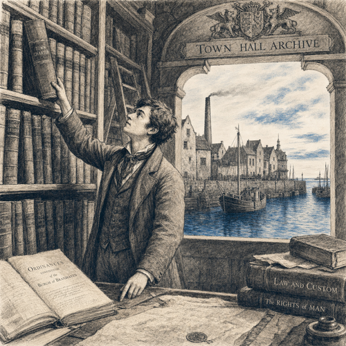
En aquel pueblo, las normas ordinarias caducaban al cabo de cinco años y las importantes, al cabo de diez. Se había dispuesto así para que nadie fuera gobernado por una decisión que ya nadie comprendiera.
Funcionaba. Cada año caducaban cosas y la gente las revisaba y conservaba lo que quería conservar.
Había una norma que nunca había caducado.
Era la norma que decía que las normas caducan.
No figuraba allí, porque nadie había pensado en ello. Había sido escrita el primer año y nunca había pasado por el consejo ciudadano.
Cuando alguien lo descubrió, cundió un breve pánico, pues ¿significaba aquello que todo era inválido?
No significaba eso, y un jurista lo explicó en una sola página.
Pero la pregunta que quedó suspendida en el aire era más incómoda.
Durante cuarenta años se había revisado cada norma salvo la más importante.
Habían usado el instrumento para todo excepto para el instrumento mismo.
¿Cuál de sus normas nunca ha pasado por sus propias normas?
Y nadie había mentido.
Relato 36
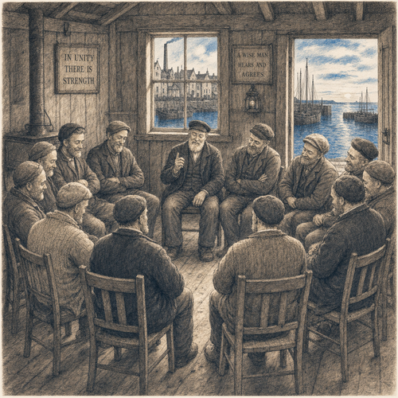
El consejo ciudadano se formaba por sorteo: doce personas, nuevas cada año.
El año en que Theia cumplió veintiuno, hubo un consejo que funcionó bien. Eran rápidos, minuciosos y estaban de acuerdo en casi todo.
La gente los elogiaba.
Anthea, que entonces todavía trabajaba media jornada en la clínica, repasó la lista de nombres porque conocía a uno de ellos.
De los doce, diez vivían a menos de cuatrocientos metros del muelle.
No había sido deliberado. El sorteo había sido limpio. Pero se había sorteado entre la lista de quienes se habían ofrecido, y se ofrece quien tiene tiempo, y tiene tiempo quien vive cerca del ayuntamiento y no tiene tierras que cultivar.
Aquel año, el consejo había tomado tres decisiones sobre el interior.
Las tres habían sido aprobadas por unanimidad.
No había habido nadie que viviera allí.
¿Por qué se pone de acuerdo su compañía con tanta rapidez?
Y nadie había mentido.
Parte X
En el que todos sostienen los cuatro pilares y, aun así, todo sale mal, porque bajo todo ello yacía una suposición que ya nadie volvió a examinar.
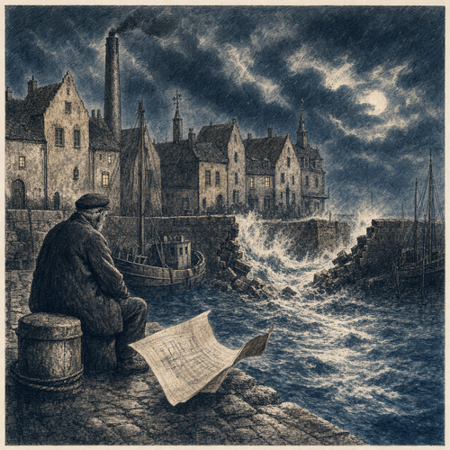
Relato 37
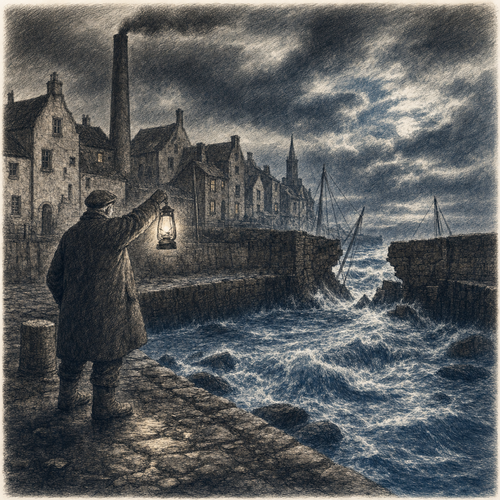
En la noche del diecisiete de octubre cedió el dique septentrional.
No fue una tormenta. Soplaba el viento, nada más. El mar estaba alto, pero no más alto de lo que está cuatro veces al año.
A las dos y diez de la madrugada, el dique cedió a lo largo de cuarenta metros y el agua se internó por las calles bajas.
No se ahogó nadie. Fue una gran fortuna, y también podría haber terminado de otro modo.
El capitán del puerto llegó al muelle en siete minutos. Las campanas sonaron antes de doce. Los pescadores se levantaron de sus camas y aquella noche sacaron a sesenta y tres personas de las casas bajas.
Anthea tenía sesenta años y permaneció en el edificio de la escuela desde las dos de la madrugada hasta las once de la mañana.
Aquella noche no hubo nadie que no hiciera lo que podía.
No hubo nadie que ocultara nada.
No hubo nadie que se mirara a sí mismo.
Más tarde se dijo que había sido la noche más hermosa del pueblo, y es una frase terrible, pero es verdad.
Y a la mañana siguiente, cuando el agua descendió, todos estaban en el muelle mirando el boquete y nadie lo comprendía.
Porque no había sucedido nada.
¿Qué se quiebra mientras todos cumplen con su deber?
Y nadie había mentido.
Relato 38
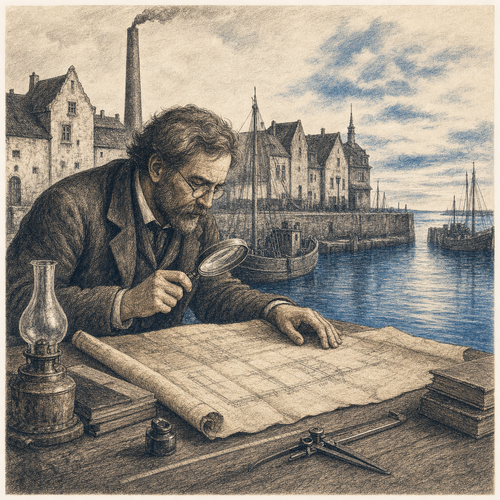
Se abrió una investigación y duró cinco meses.
Se examinó el mantenimiento. El mantenimiento estaba en orden. Se había inspeccionado como correspondía, cada año, y allí estaban los informes.
Se examinó al contratista. El contratista había entregado lo que se había pedido.
Se examinó al gobierno. El gobierno había pagado lo necesario, cada año, sin escatimar.
Se examinó al inspector. Había medido lo que debía medirse y lo había medido bien.
Cuatro personas habían hecho su trabajo y el dique había caído.
Entonces se retrocedió en el tiempo, y esa fue la parte más difícil de la investigación, porque hubo que abrir armarios que llevaban treinta y dos años cerrados.
La inspección prescribía que se midiera el dique en cuatro puntos.
Esos cuatro puntos habían sido elegidos treinta y dos años atrás. Habían sido bien elegidos, pues se encontraban en los lugares donde entonces el dique soportaba la mayor carga.
En los nueve años siguientes se desvió el canal navegable.
Por ello la corriente cambió de posición y la carga más pesada se desplazó a un punto situado ciento veinte metros más allá.
Se siguió midiendo en los cuatro puntos.
Veintidós años de buenas mediciones en el lugar equivocado.
Nadie había mentido.
¿Dónde están sus cuatro puntos de medición y cuándo fueron elegidos?
Y nadie había mentido.
Relato 39
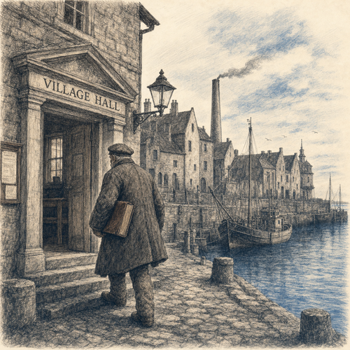
Cuando terminó la investigación, llegó un anciano con un libro.
Era un libro antiguo, con el lomo quebrado, y dijo que había pertenecido a su padre.
Era una de las primeras copias del libro de Kosus, de la época en que todavía se transcribía a mano.
Lo abrió por un relato y lo leyó en voz alta.
Trataba de una mujer que hacía pan y que un día descubrió que en sus sacos había muy poca harina, y después pesó cada saco.
Todos en la sala conocían el relato. Se lo sabían de memoria.
Cuando terminó de leerlo, dijo: "Hay algo más."
Y leyó la última línea, que nadie había citado jamás porque no es una línea hermosa:
Y ella pesó también los sacos del nuevo proveedor.
Un sonido recorrió la sala.
Porque ese es el meollo del asunto. Ella no dejó de pesar cuando encontró un proveedor que cumplía.
Había estado allí durante treinta y dos años. Lo habían leído en voz alta mil veces.
Habían memorizado la primera mitad.
¿Qué última línea de su propio libro se salta?
Y nadie había mentido.
Parte XI
Donde se muestra que el discernimiento no puede escribirse, solo puede mostrarse.
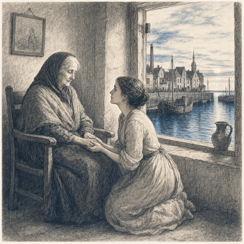
Relato 40
Theia tenía entonces veintidós años y trabajaba en la caja del puerto.
Después del tablestacado llegó a la puerta de Anthea, por la noche, y estaba enfadada.
"Usted lo sabía", dijo.
"No", dijo Anthea.
"Sí que lo sabía. Toda su vida ha revisado las cosas que otros no revisaban. ¿Por qué no revisó el tablestacado?"
Anthea la dejó entrar y preparó té, y luego se sentó y lo dijo con franqueza.
"Porque miraba la clínica. Y la harina. Y el puente. Y no el tablestacado."
"Entonces no funciona."
"No", dijo Anthea. "No funciona como tú crees que funciona. No es un tamiz que lo atrapa todo. Es una sola persona que mira en un solo lugar."
Theia no dijo nada.
"Por eso tienen que ser muchos", dijo Anthea. "Esa es la única respuesta que tengo, y es una respuesta pobre."
Theia se marchó tarde aquella noche.
La semana siguiente empezó a revisar la caja del puerto, de principio a fin, y tardó tres años en hacerlo.
Encontró siete cosas.
Anthea vivió cuatro de ellas.
¿En qué lugar mira usted, y quién mira en el otro?
Y nadie había mentido.
Relato 41
Querían enseñarlo.
Era una buena intención. Después del tablestacado se consideró que los niños debían aprender aquello, y se preparó una lección.
La lección se llamaba El Discernimiento y duraba una hora por semana.
En la pizarra había reglas. Qué sabes. Qué das por supuesto. De dónde viene el número. Cómo notarías que no es así.
Los niños lo aprendieron de memoria y podían recitarlo.
En el examen lo hicieron bien. Lo aprobaron cuarenta y seis de los cincuenta y dos.
Y en el patio seguían creyendo todo lo que decía el chico más grande.
El maestro lo vio y se desanimó.
Fue a ver a Theia, que entonces tenía treinta años, y le preguntó qué hacía mal.
Ella pasó una tarde sentada en su clase. No dijo nada y observó.
Al final dijo: "Esta tarde ha dicho diecisiete cosas. Ni una sola vez ha dicho de dónde las había sacado."
"Soy el maestro."
"Sí", dijo ella.
Él empezó a hacerlo. Con cada afirmación que hacía, añadía cómo lo sabía, y a veces decía que no lo sabía.
Al principio eso le costó la mitad de su autoridad.
Después de dos años, los niños empezaron a preguntárselo unos a otros.
¿Añade usted cómo lo sabe?
Y nadie había mentido.
Relato 42
Anthea envejeció. A los setenta y dos años dejó la clínica y después pasaba mucho tiempo junto a la ventana.
Veía el muelle y veía el nuevo tablestacado, que se medía en siete puntos y en cuyo libro se indicaba cuándo debían elegirse de nuevo esos siete puntos.
Había escrito catorce páginas cuando era joven, sobre su abuela y sobre el anciano, y aquellas páginas seguían en un cajón.
Las sacó y las leyó.
No le parecieron buenas. Le parecieron demasiado seguras.
No cambió nada de ellas.
Al pie de la última página añadió una sola frase, con una letra temblorosa, cincuenta y dos años después de la primera.
Escribí esto cuando creía que lo comprendía.
Y debajo, la fecha.
Fue la única vez que Anthea no tachó ni arrojó algo, sino que se puso a su lado.
Esas catorce páginas con aquella única frase debajo se convirtieron en el comienzo del tercer libro.
¿Qué escribió usted cuando creía que lo comprendía?
Y nadie había mentido.
Parte XII
En el que el discernimiento no resulta ser una doctrina, sino un hábito, y en el que se transmite a alguien que no lo había pedido.
Relato 43
Vino del norte un hombre que había leído el libro y tenía una propuesta.
Hablaba bien y lo había meditado. Dijo que debía añadirse un quinto pilar, y había pensado un nombre para él.
Dijo que los cuatro pilares habían resultado insuficientes, pues en la noche del diecisiete los cuatro habían permanecido en pie y, aun así, el muro había caído.
Aquella tarde había mucha gente en la sala, y a muchos les pareció que tenía razón.
Theia tenía entonces cuarenta y seis años. Ella dejó que terminara.
Entonces dijo: "¿Sobre qué se sostiene su quinto pilar?"
Él no comprendió la pregunta de inmediato.
"Un pilar está junto a los demás", dijo ella. "Cuatro pilares sostienen un techo. ¿Qué sostiene el suyo?"
"El mismo techo."
"No", dijo ella. "Lo que usted describe no es un pilar. Es lo que hay bajo el suelo. Es lo que se hace antes de empezar a sostener. Se mira si el terreno aguanta."
El hombre dijo que, aun así, aquello era una quinta cosa y que también podía tener un nombre.
"Un nombre, sí", dijo Theia. "Pero no un lugar en la fila. Póngalo en la fila y empezarán a recitarlo como a los otros cuatro, y dentro de veinte años será una palabra sobre una tabla."
No se lo puso en la fila.
Está en este libro y no está escrito en ninguna pared.
¿Lo sostiene, o yace debajo?
Y nadie había mentido.
Relato 44
Detrás del pueblo había un jardín al que llamaban el jardín de Jan, aunque Jan llevaba cuarenta y cinco años muerto.
No había letrero ni valla. Crecían allí catorce especies, y once de ellas eran comestibles.
Quien cuidaba el jardín lo cuidaba hasta que ya no podía más, y entonces entregaba la llave del cobertizo a otra persona. No se hablaba de ello. Se entregaba la llave.
Theia tenía setenta y dos años cuando lo entregó.
Se la dio a un muchacho de catorce años que el año anterior le había preguntado por qué el jardín no estaba dispuesto en hileras, como todos los demás jardines.
Ella había respondido entonces que siempre había sido así.
Y por la noche se había quedado despierta a causa de ello, pues aquella era exactamente la respuesta que durante toda su vida había dicho que no era una respuesta.
Se puso a investigarlo. Resultó que el jardín no estaba dispuesto en hileras porque Jan no podía rastrillarlas debido a su espalda.
No había sabiduría detrás. Había una espalda detrás.
Se lo contó al muchacho cuando le dio la llave. No dijo nada más.
El muchacho dispuso el jardín en hileras.
Al año siguiente las quitó, porque entre las plantas la tierra se secaba demasiado deprisa cuando estaban en hileras, y así resultó que sí había algo que Jan había encontrado con su espalda encorvada, sin saberlo.
Pero el muchacho lo sabía ahora, y Jan nunca lo había sabido, y esa es la diferencia.
¿A quién le entrega usted la llave, y le dice además por qué está dispuesto así el jardín?
Y nadie había mentido.
Este libro hace una sola cosa, y la hace cuarenta y cuatro veces.
Muestra a personas que no mienten, que no son perezosas, que no actúan con malicia y que no son necias, y a quienes, aun así, todo les sale mal. Sale mal porque bajo su buen trabajo yacía un supuesto que alguna vez fue correcto y que nadie había vuelto a comprobar.
Eso no es consolador, ni pretende serlo.
Quien, después de este libro, crea que ahora sabe cómo hay que hacerlo, no lo ha entendido. No hay tamiz que lo atrape todo. Anthea ha revisado su vida entera y, aun así, el muro de contención cayó, y cuando Theia se lo reprochó, Theia tenía razón.
La única respuesta que ofrece este libro es la que Anthea dio aquella noche: que entonces tienen que ser muchos.
Es una respuesta magra.
Es lo único que hay.
———
Libro Tres es el libro de Anthea.
Trata de la cuestión de cómo se cría a una persona
para que pueda cargar con todo esto.